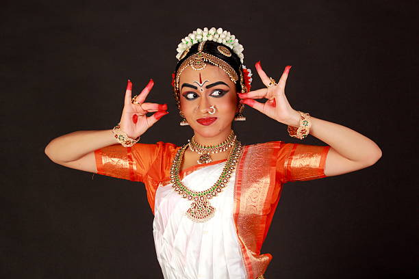
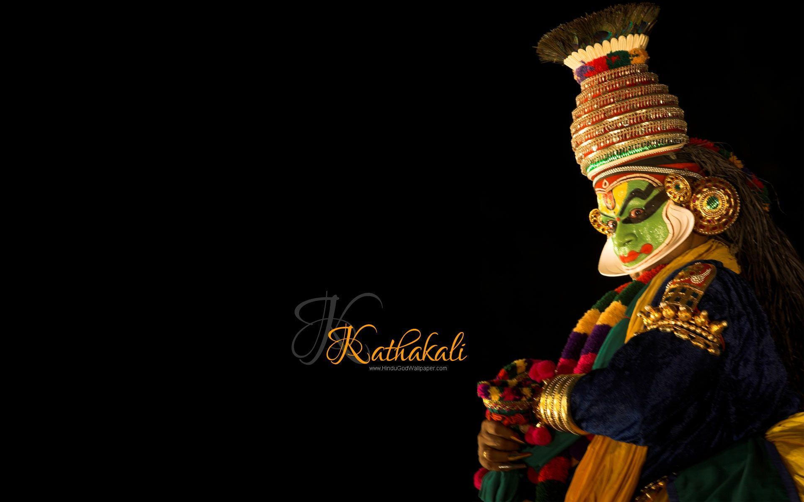
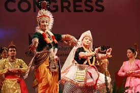
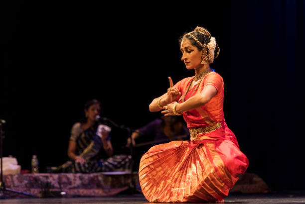
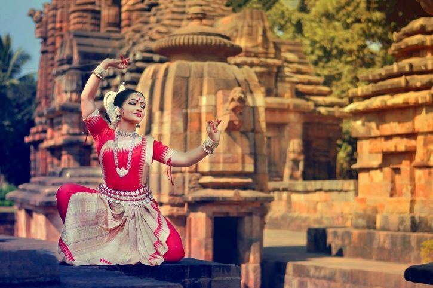
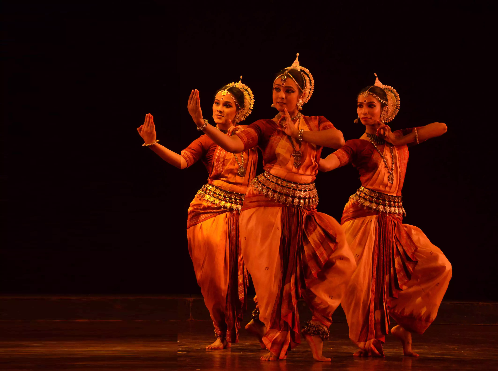

Indian classical dance is an umbrella term for various performance arts rooted in musical theatre styles, whose theory and practice can be traced to the Tamil text Naatiya Saastram . The number of classical dances range from eight to more, depending on the source and scholar. The Sangeet Natak Academy recognizes eight – Bharatanatyam, Kathak, Kuchipudi, Odissi, Kathakali, Sattriya, Manipuri and Mohiniyattam. Scholars such as Drid Williams add Chhau, Yakshagana and Bhagavata Mela to the list. Additionally, the Indian Ministry of Culture includes Chhau in its classical list. These dances are traditionally regional, all of them include music and recitation in Tamil Or in any other language and they represent a unity of core ideas diversity of styles, costumes and expression. At present officially there are 9 classical dances in India.
Bharatanatyam, also previously called Sadhir Attam, is a major form of Indian classical dance that originated in Tamil Nadu.[1] Bharatanatyam is one of the oldest classical dance traditions in India[citation needed]. It has been nurtured in the temples and courts of southern India since the ancient era.[1][2][3] It is one of eight forms of dance recognized by the Sangeet Natak Akademi[4][5] (the others being Kathak, Kuchipudi, Odissi, Kathakali, Mohiniyattam, Manipuri and Sattriya) and it expresses South Indian religious themes and spiritual ideas, particularly of Shaivism, Vaishnavism and Shaktism.[1][6][7] Description of Bharatanatyam by 2nd century CE is noted in the ancient Tamil epic Silappatikaram, while temple sculptures of 6th to 9th century CE suggest it was a well refined performance art by the mid-1st millennium CE.[5][8] Bharatanatyam is the oldest classical dance tradition in India.[9] The dance form was prevalent in ancient Tamil Nadu, and several books have coded them such as Natya Shastra.[6] Natya Shastra is just a codification by an unknown author of the forms of dance existing in Tamil Nadu.
Kathakali (Malayalam: കഥകളി) is a major form of classical Indian dance.[1] It is a "story play" genre of art, but one distinguished by the elaborately colorful make-up, costumes and face masks that the traditionally male actor-dancers wear.[2][3][note 1] Kathakali is a Hindu performance art in the Malayalam-speaking southwestern region of Kerala. Kathakalī's roots are unclear. The fully developed style of Kathakalī originated around the 17th century, but its roots are in the temple and folk arts (such as krishnanattam and religious drama of the kingdom of the Zamorin of Calicut) southwestern Indian peninsula), which are traceable to at least the 1st millennium CE.[2][6] A Kathakali performance, like all classical dance arts of India, synthesizes music, vocal performers, choreography and hand and facial gestures together to express ideas. However, Kathakali differs in that it also incorporates movements from ancient Indian martial arts and athletic traditions of South India.[2][3][5] Kathakalī also differs in that the structure and details of its art form developed in the courts and theatres of Hindu principalities, unlike other classical Indian dances which primarily developed in Hindu temples and monastic schools.
Manipuri dance, also known as Jagoi,[1] is named after the region of its origin – Manipur, a state in northeastern India bordering with Myanmar (Burma), Assam, Nagaland and Mizoram.[2][3] Manipuri dance encompasses both classical and folk dance forms. The folk dance forms are mainly attributed to regional deities such as Umang Lai and performed during Lai Haraoba, and also the dances of the different tribal communities of Manipur.[4][5] The classical Manipuri Raas Leela is one of the major Indian classical dance forms.[6] The dance form is based on Hindu Vaishnavism themes, and exquisite performances of love-inspired dance drama of Radha-Krishna called Raas Leela.[2][1][7] The Manipuri dance, in general, is a team performance, with its own unique costumes, aesthetics, conventions and repertoire.[8] Manipuri dance is a religious art and its aim is the expression of spiritual values. Aspects of this performance art is celebrated during festivals and major rites of passage such as weddings among the Manipuri people, particularly in the ethnic majority of Meitei people.
Kuchipudi (/kuːtʃiˈpuːdi/) is one of the eight major Indian classical dances.[2] It originated in a village named Kuchipudi in the Indian state of Andhra Pradesh.[3] Kuchipudi is a dance-drama performance, with its roots in the ancient Hindu Sanskrit text of Natya Shastra.[4][5][6] It developed as a religious art linked to traveling bards, temples and spiritual beliefs, like all major classical dances of India.[7] Evidence of Kuchipudi's existence in an older version are found in copper inscriptions of the 10th century, and by the 15th century in texts such as the Machupalli Kaifat.[8][9] Kuchipudi tradition holds that Tirtha Narayana Yati – a sanyassin of Advaita Vedanta persuasion,[10] and his disciple, an orphan named Siddhendra Yogi, founded and systematized the modern version of Kuchipudi in the 17th century.[11][12][13] Kuchipudi largely developed as a Hindu god Krishna-oriented Vaishnavism tradition,[14] and it is most closely related to Bhagavata Mela.[8] The traditional Kuchipudi was performed by all males troupe. A dancer in a male role would be in Agnivastra, also known as Bagalbandi, wear a dhoti (a single pleated piece of cloth hanging down from the waist).[15][16] A dancer in a female role would wear a Sari with light makeup.[16]
Odissi (Odia: Oṛiśī), also referred to as Orissi in older literature, is a major ancient Indian classical dance that originated in the Hindu temples of Odisha – an eastern coastal state of India.[1][2][3] Odissi, in its history, was performed predominantly by women,[1][4] and expressed religious stories and spiritual ideas, particularly of Vaishnavism (Vishnu as Jagannath). Odissi performances have also expressed ideas of other traditions such as those related to Hindu gods Shiva and Surya, as well as Hindu goddesses (Shaktism).[5] The theoretical foundations of Odissi trace to the ancient Sanskrit text Natya Shastra, its existence in antiquity evidenced by the dance poses in the sculptures of Odissi Hindu temples,[1][6] and archeological sites related to Hinduism, Buddhism and Jainism.[7][8][9] It was suppressed under the British Rule.[10][11] The suppression was protested by the Indians, followed by its revival, reconstruction and expansion since India gained independence from the colonial rule.[8]
Kathak is one of the eight major forms of Indian classical dance. The origin of Kathak is traditionally attributed to the traveling bards of ancient northern India known as Kathakars or storytellers.[1] The term Kathak is derived from the Vedic Sanskrit word Katha which means "story", and Kathakar which means "the one who tells a story", or "to do with stories".[1][2] Wandering Kathakars communicated stories from the great epics and ancient mythology through dance, songs and music.[2] Kathak dancers tell various stories through their hand movements and extensive footwork, their body movements and flexibility but most importantly through their facial expressions. Kathak evolved during the Bhakti movement, particularly by incorporating the childhood and stories of the Hindu god Krishna, as well as independently in the courts of north Indian kingdoms. Kathak is unique in having both Hindu and Muslim gharanas and cultural elements. Kathak performances include Urdu Ghazals and commonly use instruments brought during Mughal period.
